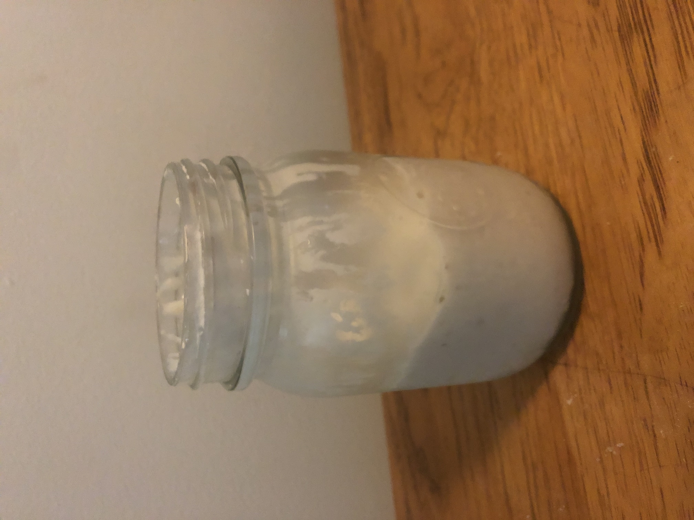
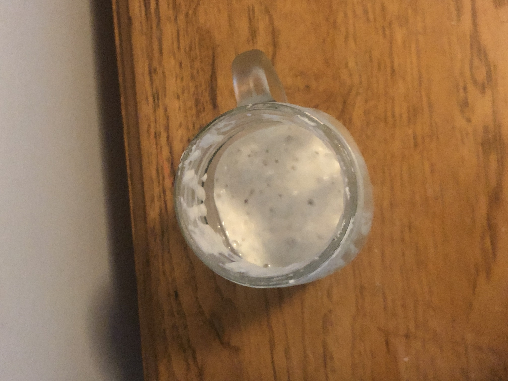
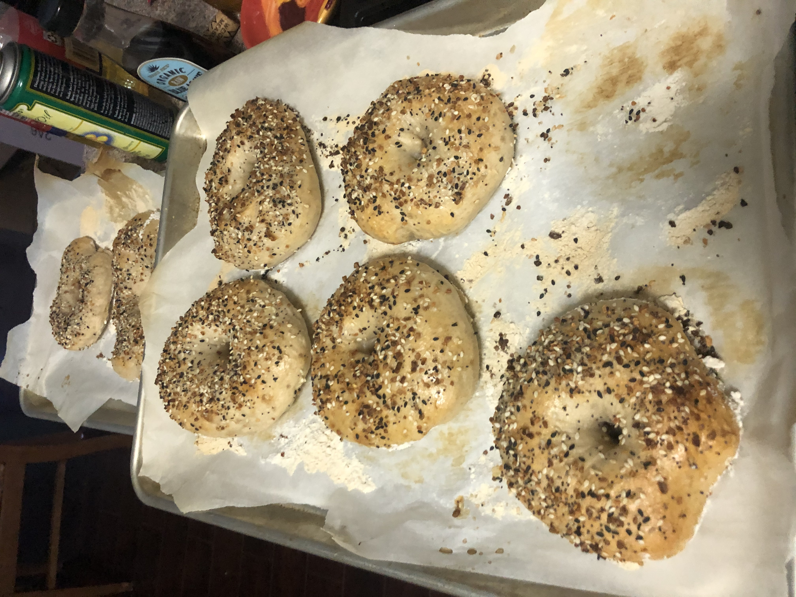
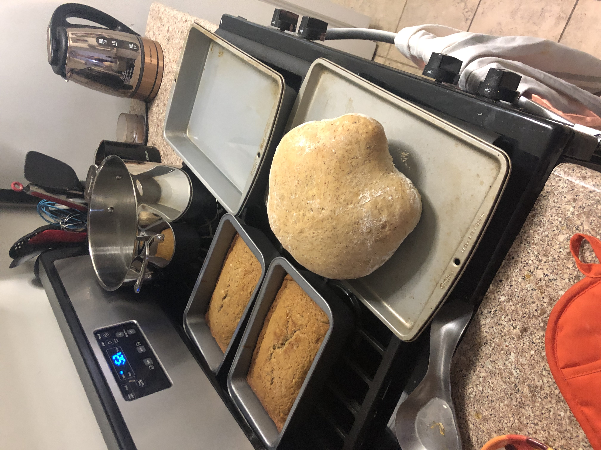
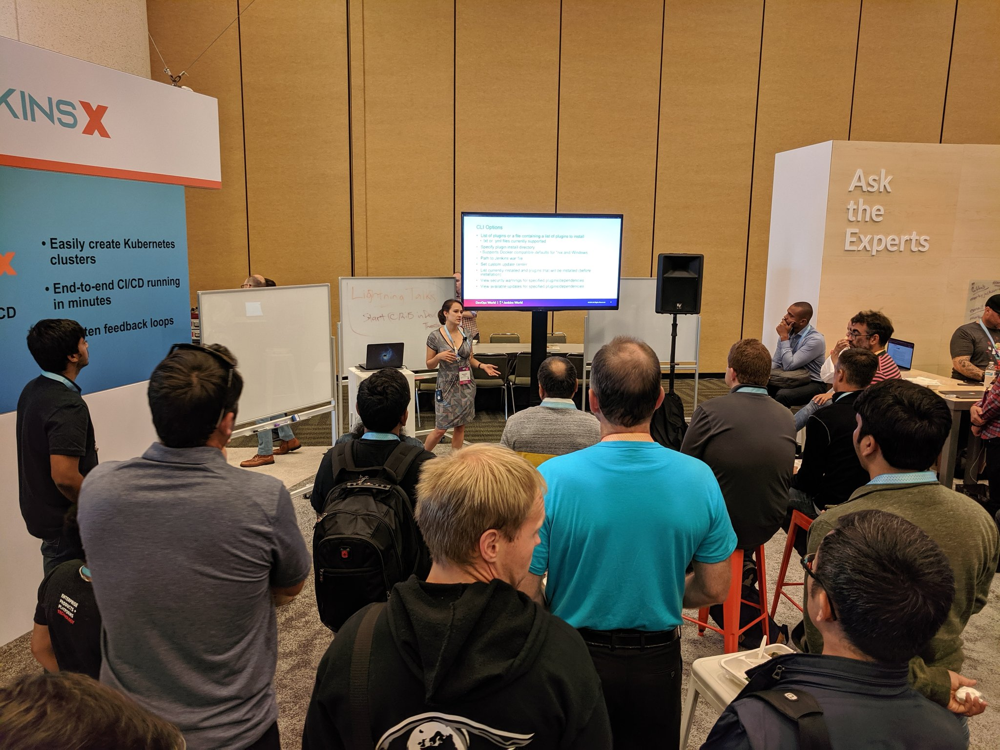

The Y chromosome is necessary for development into the male sex. It is chronically understudied. While most chromosomes exist in pairs, the Y chromosome is unpaired. Because of this and repeated DNA sequences present on the Y chromosome that make it difficult to sequence, females are often chosen when sequencing and assembling new mammalian species.
When an organisms with larger genomes are sequenced, the DNA sequence won't be revealed in one long strand. The original DNA sequence is broken into pieces (reads), which have to be put back together to uncover the original sequence. Assembly is the process of putting these sequences back together. A high quality assembly is an assembly that accurately represents the original sequence.
The goal of this project was to identify reads that originated from the Y chromosome that could be used to create a high quality assembly of the Y chromosome. We hypothesized that using additional information would aid in the creation of a high quality assembly. We proposed that if a researcher already had an assembled female genome, information about this assembly could help in identifying sequences that come from the Y chromosome.
The Y chromosome evolves very quickly and there are sequences on the Y chromosome that are not present any other place in the genome. To give an example of how the Y chromosome might evolve separately from other areas of the genome, even though humans are most closely related to chimpanzees, the Human Y chromosome is more closely related to the Gorilla Y chromosome .
One method of comparing how similar two sequences are is to use an alignment. We looked at using alignments to an already assembled female reference to identify reads that originate from the Y chromosome. We would expect that reads coming from the Y chromosome won't align to the female as well, since they can contain sequences that may not even be present in the female.
What is Nanopore data? This is the output of nanopore sequencing technology. This is a way to sequence DNA that results in much longer sequences. These longer sequences are beneficial because they contain more contextual information that can lead to more accurate assemblies; the downside of this type of sequencing technology is that it contains a lot of errors.
My thesis is publically available here.
The current pandemic is adversely affecting a lot of people right now and this is one way I thought that I could help.
I've committed to volunteering 200 hours, or ~4hrs/week, to supporting people in crisis for the next year.
If you ever find yourself in crisis, Crisis Text Line provides 24/7 support.
Meet Baby Olga, my delicious and industrious starter.
 Baby Olga has been the start of many tasty carb-based treats.
 
In the spring and summer of 2019, I completed Google Summer of Code and contributed to an open source project instead of doing a traditional internship. My project involved creating a new tool for plugin management in Jenkins.
My contributions slowed down since last summer, but because it's open source, you can see discussions about the project, how I interacted with my mentor and members of the Jenkins community , and every line of code I wrote .
I was invited to talk at DevOps World | Jenkins World to present my work.
 In addition to getting experience with open source, I also gained experience working remotely and with a distributed team of contributers.